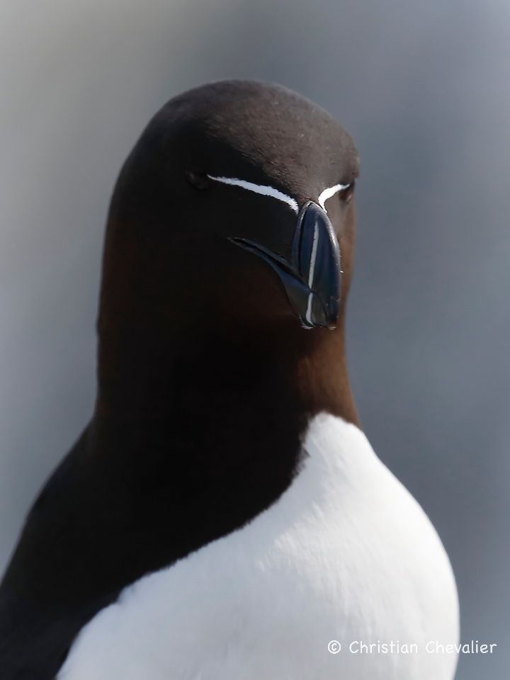
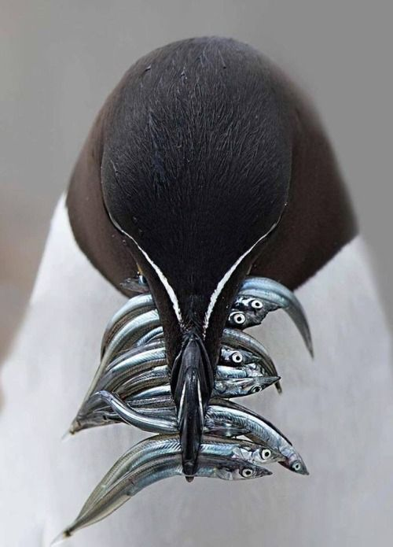
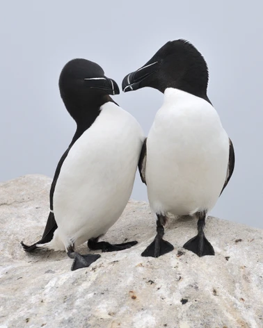
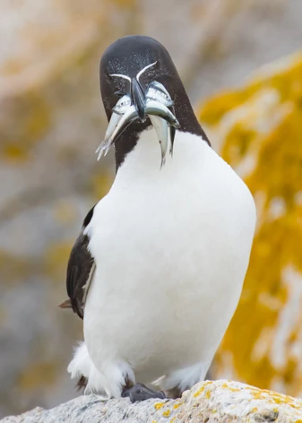

Información Detallada

Hábitat y Ubicación Geográfica
El azorbill habita principalmente en las costas rocosas del Atlántico Norte. Sus colonias más grandes se encuentran en:
- Islandia — alberga más del 60% de la población mundial
- Noruega y las Islas Feroe — colonias en acantilados marinos
- Gran Bretaña e Irlanda — costas occidentales
- Este de Canadá y noreste de EE.UU. — en invierno
Anida en grietas rocosas, repisas de acantilados y cavidades protegidas del viento. Durante el invierno migra hacia aguas abiertas más al sur.

Hábitos Alimenticios
El Razorbill es un depredador marino que se especializa en la pesca submarina. Puede bucear hasta 120 metros de profundidad y permanecer bajo el agua cerca de un minuto completo.
Sus presas favoritas incluyen:
- Lanzón y arenque (peces pequeños de cardumen)
- Capelán y esperlano
- Crustáceos y gusanos marinos
Para cazar, usa sus alas como aletas bajo el agua, «volando» en el mar con una habilidad sorprendente.

Hábitos Reproductivos
El Razorbill es una especie monógama que forma parejas estables durante varios años, a veces de por vida.
El ciclo reproductivo incluye:
- Puesta de un solo huevo por temporada (mayo–junio)
- Incubación compartida entre ambos padres: ~35 días
- El polluelo abandona el nido antes de poder volar, a las 2–3 semanas
- El padre lo acompaña al mar y continúa alimentándolo por semanas
Esta estrategia de cría única los hace particularmente vulnerables a perturbaciones en su entorno de anidación.

Estado de Conservación
Según la Lista Roja de la UICN, el Razorbill se clasifica actualmente como especie de Preocupación Menor (LC), aunque su población muestra tendencia decreciente en algunas regiones.
Las principales amenazas incluyen:
- Contaminación por derrames de petróleo
- Escasez de presas por sobrepesca y cambio climático
- Captura incidental en redes de pesca
- Perturbación humana en zonas de anidación
Ficha Técnica
| Característica | Descripción |
|---|---|
| Nombre científico | Alca torda |
| Nombre común | Razorbill / Alca Común |
| Clase | Aves (Charadriiformes) |
| Longitud | 38 – 43 cm |
| Envergadura | 60 – 69 cm |
| Peso | 590 – 890 g |
| Alimentación | Peces, crustáceos, gusanos marinos |
| Hábitat | Costas rocosas del Atlántico Norte |
| Profundidad de buceo | Hasta 120 metros |
| Longevidad | Hasta 20 años en estado silvestre |
| Estado de conservación | Preocupación Menor (UICN) |
| Población estimada | ~1.000.000 individuos |